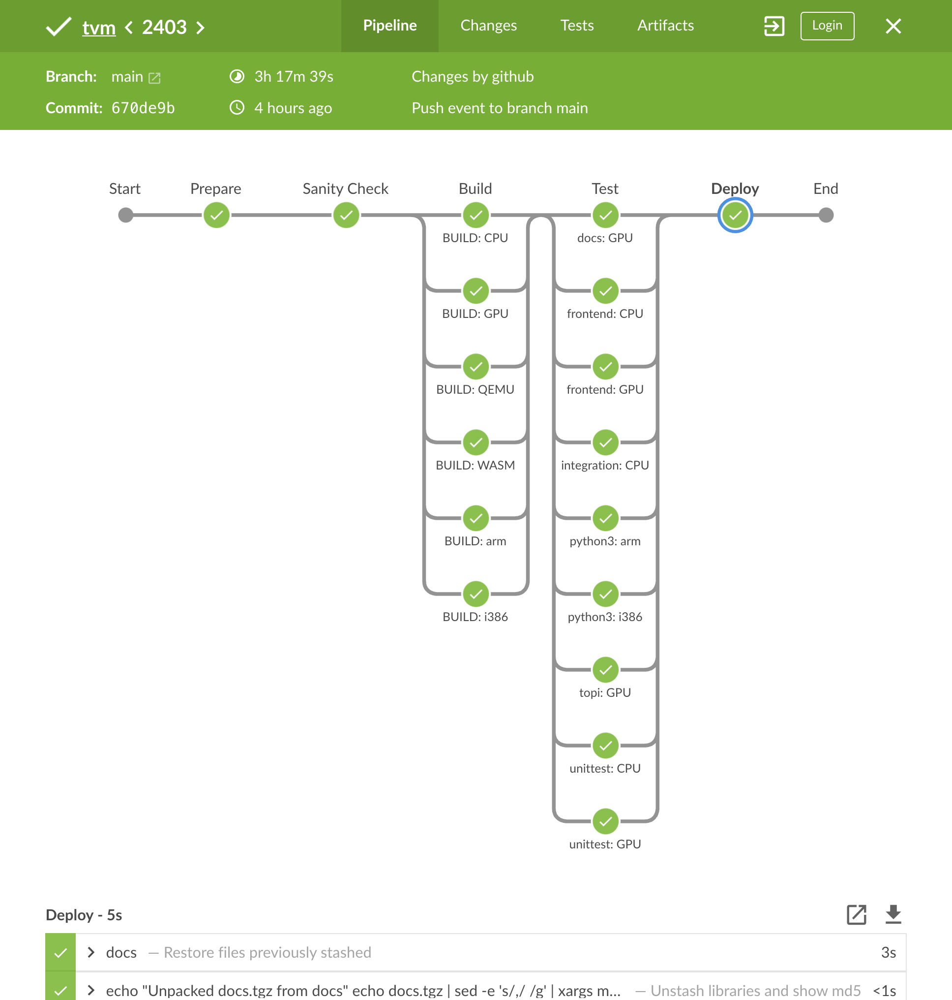

Using TVM’s CI
TVM primarily uses Jenkins for running Linux continuous integration (CI) tests on branches pull requests through a build configuration specified in a Jenkinsfile. Jenkins is the only CI step that is codified to block merging. TVM is also tested minimally against Windows and MacOS using GitHub Actions.
This page describes how contributors and committers can use TVM’s CI to verify their code. You can read more about the design of TVM CI in the tlc-pack/ci repo.
For Contributors
A standard CI run looks something like this viewed in Jenkins’ BlueOcean viewer. CI runs usually take a couple hours to complete and pull requests (PRs) cannot be merged before CI has successfully completed. To diagnose failing steps, click through to the failing pipeline stage then to the failing step to see the output logs.
{kind=link}
Debugging Failures
When CI fails for some reason, there are several methods to diagnose the issue.
Jenkins Logs
The first place to look for a failure is in the CI logs, follow the red Xs on the failing job to view the logs. Note:
Jenkins does not display the full log by default, at the top of the log viewer is a button “Show complete log” which will take you to a plaintext version of the log
pytestfailures are summarized at the bottom of the log but you will likely need to scroll up to view the actual failure.
Reproduce Failures
Most TVM Python tests run under pytest and can be run as described in Testing.
Reporting Issues
Issues with CI should be reported on GitHub with a link to the relevant jobs, commits, or PRs.
For Maintainers
This section discusses processes ran by TVM Maintainers.
Procedures for Keeping CI Green
This section talks about common procedures used to keep CI passing.
Broken CI due to Simultaneous Merge
Developers rely on the TVM CI to get signal on their PRs before merging. Occasionally, two
different PRs can pass CI individually but break main when both land. This in turn causes an
error to show up on an unrelated PR that is based on the broken commit(s). Broken commits can be
identified through GitHub via the commit status icon
or via Jenkins.
In these situations it is ultimately the responsibility of the TVM Committer who merged the PR to fix CI (others are encouraged to help). Typical responses to this situation are: 1. revert the offending commit 2. submit a forward fix to address the issue.
It is up to the committer and commit author which option to choose. A broken CI affects all TVM developers and should be fixed as soon as possible, while a revert may be especially painful for the author of the offending PR when that PR is large.
Dealing with Flakiness
If you notice a failure on your PR that seems unrelated to your change, you should search [recent GitHub issues related to flaky tests](https://github.com/apache/tvm/issues?q=is%3Aissue+%5BCI+Problem%5D+Flaky+>) and [file a new issue](https://github.com/apache/tvm/issues/new?assignees=&labels=&template=ci-problem.md&title=%5BCI+Problem%5D+>) if you don’t see any reports of the failure. If a certain test or class of tests affects several PRs or commits on main with flaky failures, the test should be disabled via [pytest’s @xfail decorator](https://docs.pytest.org/en/6.2.x/skipping.html#xfail-mark-test-functions-as-expected-to-fail) with [strict=False](https://docs.pytest.org/en/6.2.x/skipping.html#strict-parameter) and the relevant issue linked in the disabling PR.
@pytest.mark.xfail(strict=False, reason="Flaky test: https://github.com/apache/tvm/issues/1234")
def test_something_flaky():
pass
Then submit a PR as usual
git add <test file>
git commit -m'[skip ci][ci] Disable flaky test: ``<test_name>``
See #<issue number>
'
gh pr create
Skipping CI
For reverts and trivial forward fixes, adding [skip ci] to the revert’s
PR title will cause CI to shortcut and only run lint. Committers should
take care that they only merge CI-skipped PRs to fix a failure on main and
not in cases where the submitter wants to shortcut CI to merge a change faster.
The PR title is checked when the build is first run (specifically during the lint
step, so changes after that has run do not affect CI and will require the job to
be re-triggered by another git push).
# Revert HEAD commit, make sure to insert '[skip ci]' at the beginning of
# the commit subject
git revert HEAD
git checkout -b my_fix
# After you have pushed your branch, create a PR as usual.
git push my_repo
# Example: Skip CI on a branch with an existing PR
# Adding this commit to an existing branch will cause a new CI run where
# Jenkins is skipped
git commit --allow-empty --message "[skip ci] Trigger skipped CI"
git push my_repo
Docker Images
Each CI job runs most of its work inside a Docker container, built from files in the docker/ folder.
Updating a Docker Image Tag
To update a tag, a new image needs to be built and uploaded to Docker Hub, then the image tags in docker-images.ini need to be updated to match the image tags on Docker Hub.
Docker images are built automatically nightly via the tvm-docker,
which uploads the built images to https://hub.docker.com/u/tlcpackstaging once
they have passed CI. Post-merge CI runs on main build Docker images ad-hoc
and upload them to the tlcpackstaging Docker Hub account as well. There is an
auto-promotion process for tlcpackstaging Docker images to be moved to the
tlcpack account. This means that image tags from tlcpackstaging can be
used in CI and they will be automatically moved to tlcpack after a successful
post-merge CI run on main. So the steps to update the image are:
Merge a PR that changes the Dockerfiles under
docker/or scripts indocker/install.Do either of:
Wait for the post-merge CI build from the PR to complete and upload the newly built image to the tlcpackstaging Docker Hub.
Wait for the nightly Docker image build to complete and upload the newly built image to the tlcpackstaging Docker Hub.
Find the newly uploaded image tag on the tlcpackstaging Docker Hub, for example
20221208-070144-22ff38dffand update the tag inci/jenkins/docker-images.inito use the tlcpackstaging tag but under the tlcpack account, e.g.tlcpack/ci-arm:20221208-070144-22ff38dff. Send in a PR with these changes and wait for it to run through CI to ensure the new images are valid.Merge the
docker-images.iniupdate PR. Once post-merge CI finishes running onmainthetlcpackstagingtag will be re-uploaded totlcpackautomatically.
Adding a New Docker Image
New docker images can be added to test TVM on a variety of platforms. Here are the steps for adding a new CI image:
Define the
docker/Dockerfile.ci_fooand associated scripts indocker/install. Create a PR containing only these changes (noJenkinsfilechanges).A committer verifies the image builds locally and then reviews/approves this PR.
A committer creates the ci-foo repos in https://hub.docker.com/u/tlcpack and https://hub.docker.com/u/tlcpackstaging.
Create a PR to create an ECR repo for the image in tlcpack/ci: https://github.com/tlc-pack/ci/pull/46/files
A committer creates and gets merged a PR to add the image to the
JenkinsfileExample: https://github.com/apache/tvm/pull/12369/files.
NOTE: The PR must be opened from a branch in apache/tvm, not from a branch in a forked repo.
A committer adds this image to the daily docker rebuild/validation run in tlcpack.
ci-docker-staging
The ci-docker-staging
branch is typically used to test updates to Docker images and Jenkinsfile changes. When
running a build for a normal PR from a forked repository, Jenkins uses the code
from the PR except for the Jenkinsfile itself, which comes from the base branch.
When branches are built, the Jenkinsfile in the branch is used, so a committer
with write access must push PRs to a branch in apache/tvm to properly test
Jenkinsfile changes. If your PR makes changes to the Jenkinsfile, make sure
to @ a committer
and ask them to push your PR as a branch to test the changes.
CI Monitoring Rotation
Some tests are also flaky and occasionally fail for reasons unrelated to the PR. The CI monitoring rotation watches for these failures and disables tests as necessary. It is the responsibility of those who wrote the test to ultimately fix and re-enable the test.